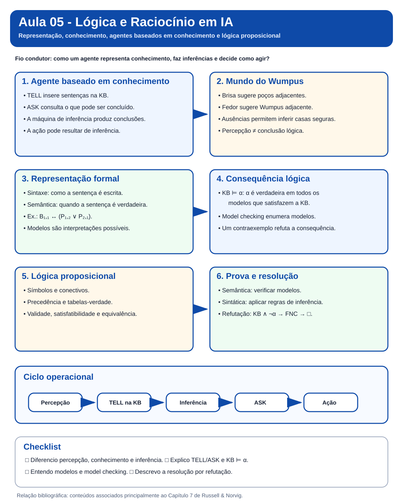

Aula 05 - Lógica e Raciocínio em IA
Guia visual de revisão. Use esta nota depois da aula para reorganizar os conceitos antes do estudo guiado e da atividade. O objetivo não é substituir os slides, mas transformar o conteúdo em um mapa de relações, mantendo o mesmo padrão das notas anteriores.
Nota visual da aula

Síntese visual dos principais conceitos da Aula 05. Use a figura para uma primeira revisão e, em seguida, percorra as seções abaixo para aprofundar cada conceito.
Visão em 30 segundos
| Pergunta | Ideia-chave |
|---|---|
| O que faz um agente baseado em conhecimento? | Mantém uma base de conhecimento e usa inferência para decidir como agir. |
O que faz TELL? |
Insere na KB uma sentença que representa uma percepção, fato ou ação. |
O que faz ASK? |
Consulta o que pode ser concluído a partir da KB. |
| Qual é o papel do Mundo do Wumpus? | Tornar visível a passagem de percepção para representação, inferência e ação. |
| O que é um modelo? | Uma interpretação possível dos símbolos da linguagem. |
O que significa KB ⊨ α? |
Toda interpretação que satisfaz a KB também satisfaz α. |
| Como provar uma conclusão? | Por verificação de modelos ou por regras de inferência, como resolução. |
Mapa mental da aula
mindmap
root((Lógica e Raciocínio em IA))
Agente baseado em conhecimento
Base de conhecimento
TELL
ASK
Máquina de inferência
Representação
Sintaxe
Semântica
Sentenças
Modelos
Mundo do Wumpus
Brisa
Fedor
Brilho
Casas seguras
Lógica proposicional
Símbolos
Conectivos
Tabelas verdade
Validade
Satisfatibilidade
Inferência
Consequência lógica
Verificação de modelos
FNC
Resolução
1. A pergunta central da aula
A Aula 05 responde à seguinte pergunta:
Como um agente pode representar conhecimento sobre o mundo e usá-lo para inferir novas informações antes de agir?
O Mundo do Wumpus funciona como fio condutor porque permite observar toda a cadeia de raciocínio do agente.
flowchart LR
P["Percepção"] --> T["TELL"]
T --> K["Base de conhecimento"]
K --> I["Inferência"]
I --> Q["ASK"]
Q --> A["Ação"]
A --> P
2. Retomando TELL e ASK
TELL e ASK já aparecem na discussão de agentes baseados em conhecimento. Nesta aula, a ideia é aprofundar o que existe dentro da KB e como uma consulta pode ser respondida por inferência.
| Operação | Papel |
|---|---|
TELL(KB, sentença) |
acrescenta conhecimento novo à KB |
ASK(KB, consulta) |
pergunta o que pode ser concluído a partir da KB |
Exemplo:
Percepção em [1,1]: sem brisa e sem fedor
TELL(KB, não há brisa em [1,1])
TELL(KB, não há fedor em [1,1])
ASK(KB, "há uma casa segura adjacente?")
Ponto de atenção:
ASKnão significa apenas recuperar algo que já estava explicitamente armazenado. A resposta pode depender de inferência.
3. Base de conhecimento e máquina de inferência
Uma base de conhecimento contém sentenças em uma linguagem formal. A máquina de inferência usa essas sentenças para produzir novas conclusões.
flowchart LR
S["Sensores"] --> T["TELL"]
T --> K["Base de conhecimento"]
K --> M["Máquina de inferência"]
M --> Q["ASK"]
Q --> A["Atuadores"]
Três níveis de descrição
| Nível | O que observamos |
|---|---|
| conhecimento | o agente "sabe" algo sobre o ambiente |
| lógico | esse conhecimento é expresso como sentenças |
| implementação | um programa manipula representações simbólicas |
4. Mundo do Wumpus como exemplo central
No Mundo do Wumpus, o agente recebe sinais locais e precisa inferir perigos que não consegue observar diretamente.
| Percepção | Significado local |
|---|---|
Breeze |
existe poço em alguma casa adjacente |
Stench |
existe Wumpus em alguma casa adjacente |
Glitter |
o ouro está na casa atual |
Bump |
houve colisão com a parede |
Scream |
o Wumpus foi atingido |
flowchart TD
B["Sem brisa na casa inicial"] --> NP["Não há poço nas casas adjacentes"]
S["Sem fedor na casa inicial"] --> NW["Não há Wumpus nas casas adjacentes"]
NP --> SAFE["Casas adjacentes são seguras"]
NW --> SAFE
Percepção não é o mesmo que inferência. O agente percebe a ausência de brisa. A conclusão de que uma casa adjacente é segura é uma consequência lógica.
5. Sintaxe e semântica
A distinção entre sintaxe e semântica é central.
| Conceito | Pergunta associada |
|---|---|
| Sintaxe | como escrever a sentença? |
| Semântica | quando essa sentença é verdadeira? |
Exemplo proposicional:
B11 <-> (P12 ou P21)
- Sintaxe: a expressão precisa seguir as regras da linguagem.
- Semântica: precisamos definir em quais interpretações a sentença é verdadeira.
6. Modelos e mundos possíveis
Um modelo é uma interpretação possível para os símbolos de uma linguagem.
flowchart LR
K["KB"] --> M1["Modelo 1"]
K --> M2["Modelo 2"]
K --> M3["Modelo 3"]
M1 --> V["A consulta é verdadeira?"]
M2 --> V
M3 --> V
A KB restringe os mundos possíveis. Quanto mais conhecimento consistente é acrescentado, menos modelos permanecem compatíveis.
7. Consequência lógica
A notação:
KB ⊨ α
significa que α é verdadeira em todos os modelos em que a KB é verdadeira.
flowchart TD
K["Modelos que satisfazem a KB"] --> Q{"A conclusão é verdadeira em todos?"}
Q -->|sim| E["KB implica a conclusão"]
Q -->|não| C["Existe um contraexemplo"]
Erro comum: encontrar um único modelo em que a conclusão é verdadeira não basta para demonstrar consequência lógica.
8. Lógica proposicional
A lógica proposicional trabalha com símbolos atômicos e conectivos.
| Símbolo | Leitura |
|---|---|
¬p |
não p |
p ∧ q |
p e q |
p ∨ q |
p ou q |
p ⇒ q |
se p, então q |
p ⇔ q |
p se e somente se q |
Precedência usual:
¬ > ∧ > ∨ > ⇒ > ⇔
9. Validade, satisfatibilidade e equivalência
| Conceito | Significado |
|---|---|
| satisfatível | existe ao menos um modelo que torna a sentença verdadeira |
| insatisfatível | não existe modelo que torne a sentença verdadeira |
| válida | a sentença é verdadeira em todos os modelos |
| equivalente | duas sentenças possuem os mesmos modelos |
10. Verificação de modelos
A forma mais direta de verificar uma consequência lógica é enumerar modelos.
flowchart TD
S["Identificar símbolos"] --> E["Enumerar modelos"]
E --> F["Filtrar os modelos que satisfazem a KB"]
F --> T{"A consulta é verdadeira em todos?"}
T -->|sim| Y["Consequência lógica"]
T -->|não| N["Não é consequência lógica"]
Com n símbolos proposicionais existem 2^n interpretações possíveis. Por isso, o custo cresce rapidamente.
11. Prova como busca no espaço de inferências
Também podemos produzir uma prova como uma sequência de sentenças derivadas.
flowchart LR
K["Sentenças da KB"] --> R["Regras de inferência"]
R --> D["Novas sentenças"]
D --> G["Conclusão desejada"]
Essa visão conecta a Aula 05 ao conteúdo anterior de busca: o estado inicial contém a KB e as ações correspondem às regras de inferência aplicáveis.
12. Forma Normal Conjuntiva e resolução
Na resolução por refutação:
- acrescentamos a negação da consulta à KB;
- convertemos as sentenças para FNC;
- aplicamos a regra de resolução;
- se obtivermos a cláusula vazia, chegamos a uma contradição e a conclusão foi provada.
flowchart TD
A["KB mais a negação da consulta"] --> B["Converter para FNC"]
B --> C["Aplicar resolução"]
C --> D{"Cláusula vazia?"}
D -->|sim| E["Conclusão provada"]
D -->|não| F["Continuar enquanto surgirem cláusulas novas"]
13. Conexões com as aulas anteriores
flowchart LR
A1["Agentes"] --> A5["Agente baseado em conhecimento"]
A3["Representação"] --> A5
A4["Busca"] --> P["Prova como busca"]
A5 --> LPO["Próximo passo: Lógica de Primeira Ordem"]
- Agentes: percepção, ação e racionalidade reaparecem no agente lógico.
- Representação: agora a representação ganha sintaxe e semântica formais.
- Busca: uma prova pode ser vista como busca em um espaço de inferências.
- Próxima etapa: a Lógica de Primeira Ordem amplia o poder de representação.
14. Erros conceituais frequentes
Erro 1: perceber é o mesmo que concluir. Não. Percepções alimentam a KB; inferências produzem conclusões.
Erro 2: modelo e mundo real são sinônimos. Não. Um modelo é uma interpretação formal possível.
Erro 3: se
ASKretorna algo, o agente observou diretamente aquilo. Não. A resposta pode ter sido inferida.Erro 4: validade e satisfatibilidade significam a mesma coisa. Não. Validade exige verdade em todos os modelos; satisfatibilidade exige ao menos um.
Revisão de 1 minuto
Lógica e Raciocínio em IA
├── agente baseado em conhecimento
│ ├── TELL
│ ├── ASK
│ ├── KB
│ └── máquina de inferência
├── representação formal
│ ├── sintaxe
│ ├── semântica
│ └── modelos
├── Mundo do Wumpus
│ ├── percepções locais
│ └── inferências sobre segurança e perigo
├── lógica proposicional
│ ├── conectivos
│ ├── tabelas-verdade
│ ├── validade
│ └── satisfatibilidade
└── inferência
├── consequência lógica
├── verificação de modelos
├── FNC
└── resolução
Checklist
- [ ] Consigo explicar o papel de
TELLeASK. - [ ] Diferencio percepção, representação e inferência.
- [ ] Consigo interpretar as percepções do Mundo do Wumpus.
- [ ] Sei distinguir sintaxe e semântica.
- [ ] Entendo o que é um modelo.
- [ ] Consigo explicar o significado de
KB ⊨ α. - [ ] Diferencio validade, satisfatibilidade e equivalência.
- [ ] Entendo por que a verificação de modelos cresce exponencialmente.
- [ ] Consigo descrever a resolução por refutação.
Próximo passo: faça o Estudo Guiado 05, explore o Mundo do Wumpus e revise os pseudocódigos da Aula 05.